Bentley Studios, the work of Duncan Bentley
Self-taught designer, vocalist and maker from Gqeberha, South Africa. Fourteen years of album art, merch and metal logos. Now also vector stock drawn line by line in code, 3D models and photographs.
One desk since 2012. Logos to lyrics.
Bentley Studios is the name over everything I make. It started as Bentley Art & Design in 2012: album covers, shirts, posters and logos for bands, labels and independent brands, every one built by hand in Photoshop and Illustrator.
Since then the desk has grown. I front two metal bands, run their stores and socials, manage campaigns for other artists, and in 2026 started writing code that draws vector art, 3D models and scenery for stock libraries. No generative AI anywhere in it.
The flight-sim scenery has its own home now: Bentley Scenery.
Six trades, one strand
- Graphic design12+ years. Album art, merch, logos, posters.
- Vocals & band management12+ years. Xavleg and Vulvodynia.
- Social media10+ years. 14 channels run.
- E-commerce9+ years. Shopify stores, built and stocked.
- Music production8 years. Recording, comping, arrangement.
- Code-made art2026. Vectors, 3D and scenery from scripts.
The record
Numbers from my own CV, each with where it comes from.
| Figure | What it counts | Source |
|---|---|---|
| 84.6M | Lifetime streams on the catalogue I am credited on | Muso.ai, Feb 2026 |
| Top 5% | Most streamed vocalists worldwide in 2025 | Muso.ai Encore 2025 |
| 258 | Credited releases as vocalist, songwriter and artist | Muso.ai |
| 816,297 | Combined following across 14 channels I own or manage | Verified Sept 2026 |
| 16.7M | Streams on the Xavleg Gore EP, four tracks | Spotify |
| 11M | Video views from 1,800+ videos | Muso.ai |
Drawn by code
Stock vector sets I write as scripts, line by line, then export to EPS for Shutterstock and other libraries. Every shape is placed by a program I wrote; nothing is generated by AI.
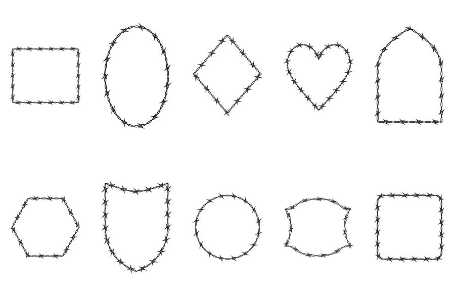
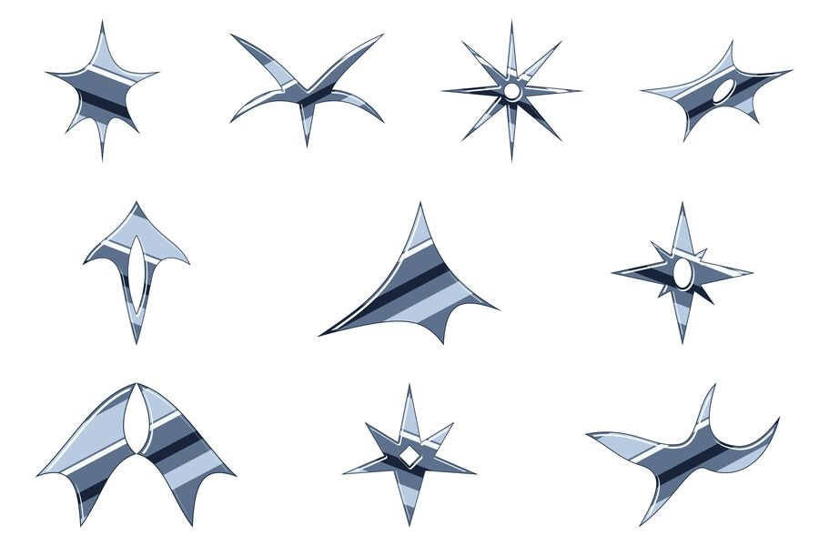
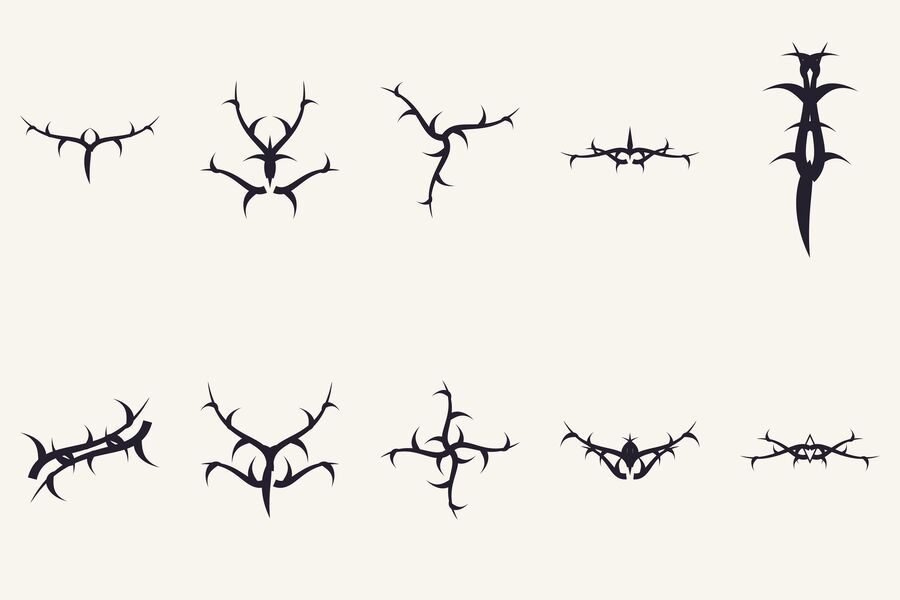
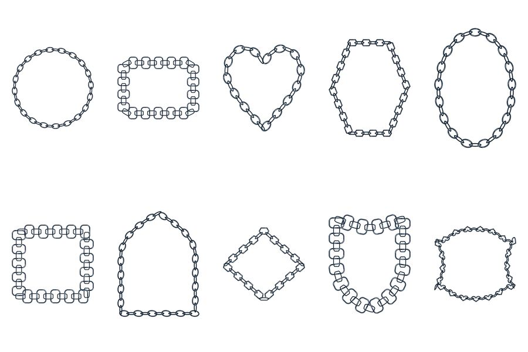
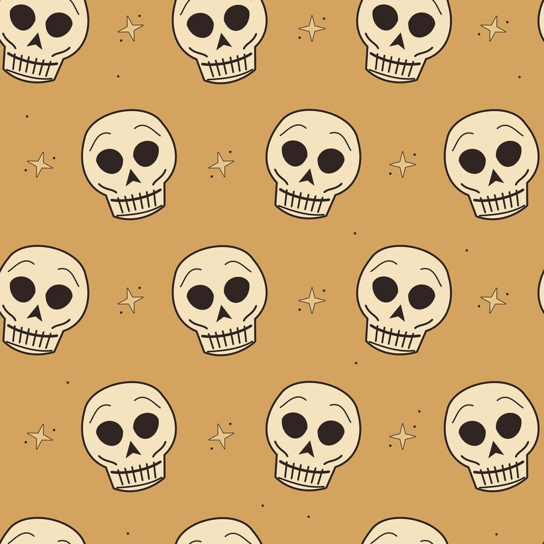
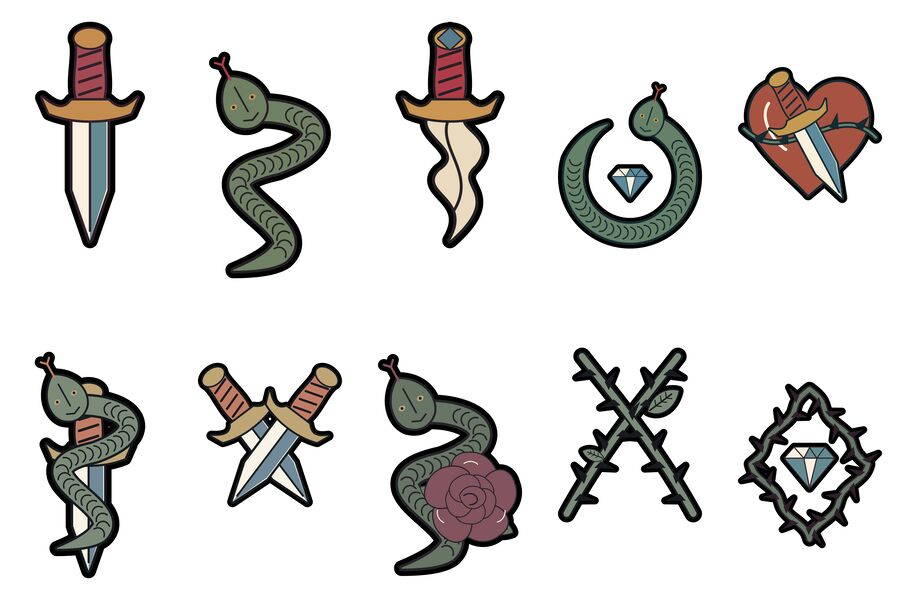
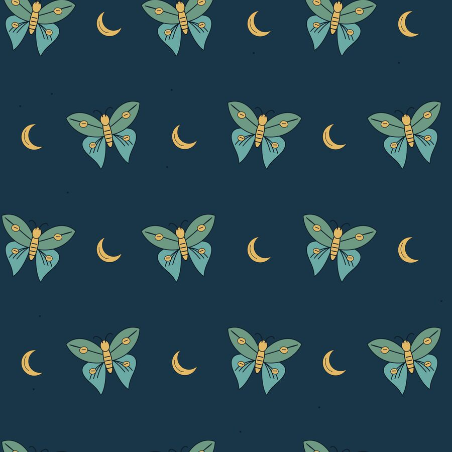
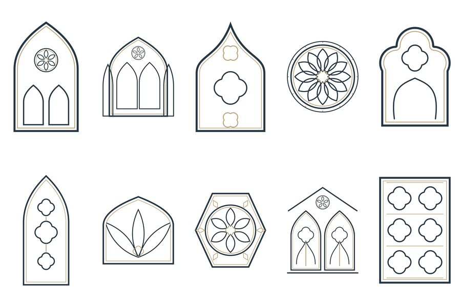
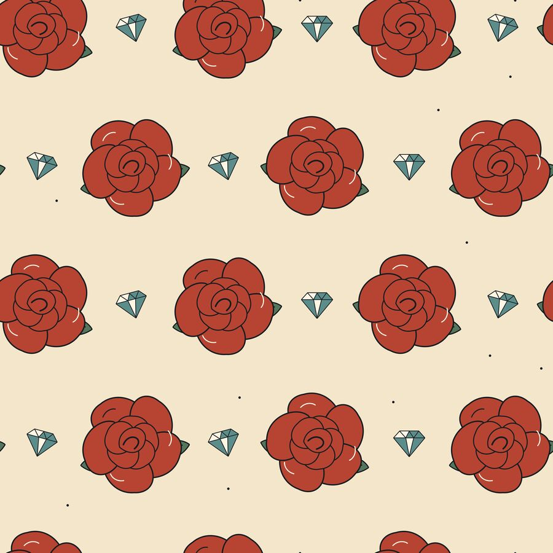
On the record
- Xavleg
- Co-founder, vocals and lyrics on the full catalogue since 2016. Gore (EP, 2016), Gore 2.0 (2018), Hippopotomonstrosesquippedaliophobia (EP, November 2025). I also design the merch and run xavlegband.com.
- Vulvodynia
- Founding vocalist, 2014 to 2023. Vocals and lyrics on every release, plus booking, tours, socials and design.
- Guest features
- Nervectomy, Wormhole, Harvest Misery, The Elite Five and Vulvocrania.
Lens & render
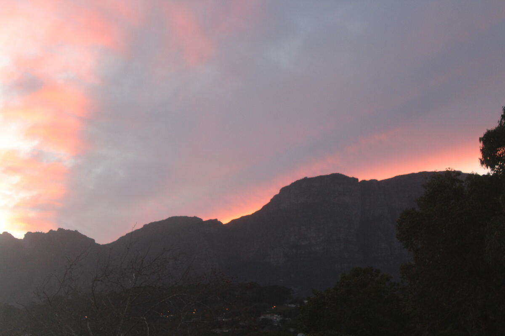
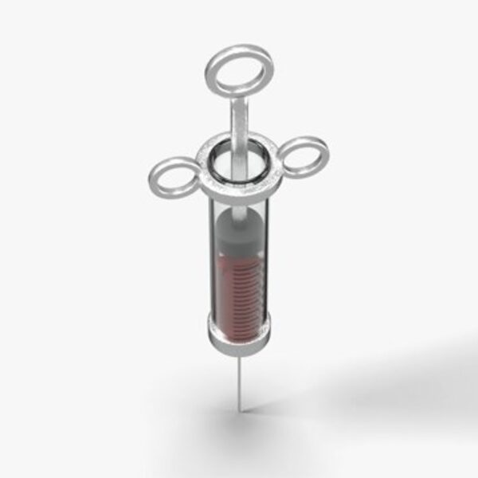
Got a logo, a cover or a drop?
Open to freelance, contract and ongoing remote work. I'm on SAST (GMT+2) and work with clients in any time zone.
Email me duncanmarcbentley@gmail.com